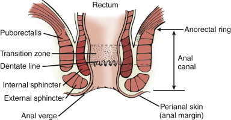

Diamond-shaped area caudal to pelvic diaphragm; line between anterior parts of ischial tuberosities divides posterior anal region and anterior urogenital region (contains external genitalia).
Skin of anal region
Inferior rectal nerve (S3,4) and perineal branch of S4; some branches from coccygeal plexus (S5)
Urogenital region
Ilioinguinal nerve (L1) ® anterior third of scrotum / labium majus
Penis = dorsal nerve (branch of pudendal)
Scrotum = posterior 2/3 from perineal branch of posterior femoral cutaneous nerve (laterally)
- and scrotal / labial branch of perineal branch of pudendal nerve (S3)
- pudendal nerve block will thus not anaesthetise the whole vulva.
Sides = sacrotuberous ligaments, base = anterior parts of ischial tuberosities.
Upper part of funnel = levators
Stem of funnel = EAS (continuous with levators; skeletal muscle)
Tube within = IAS (continuation of inner circ layer of rectal muscle wall; visceral muscle).
Junction of rectum and anal canal is at
pelvic floor (where puborectalis clasps)

Transitional
epithelium extends for ~1cm, has statified squamous,
with islands of rectal and urothelial features.
- rectal mucosa is columnar with mucus-secreting goblet cells.
Anoderm
modified squamous epithelium lying between dentate and anal
verge
- similar to anal skin except thin, no hair follicles or sweat
glands.
- rich supply of nerves; sensitive.
Eventually joins hair-bearing peri-anal skin; with sebaveous and
sweat glands.
Said to have deep, superficial & subcutaneous parts; best regarded as 1 entity.
Rectal end (deep part) is continuous with levator ani.
- note that there is no levator in anterior midline: sphincter fibres complete ring here (see 367).
- Where puborectalis fuses with external sphincter = anorectal ring; also = upper extent of internal sphincter; palpable on rectal examination.
Middle (superficial part); formerly called middle part, now though obsolete.
- Fibromuscular stands pass back to coccyx = anococcygeal ligament (only bony attachment; Plate 367); retrosphincteric space behind here lies b/n this ligament and raphe of iliococcygeal levator ani.
- This ligament + EAS + pubococcygeus & iliococcygeus + presacral fascia = postanal plate; rectum lies on this.
- Anteriorly superficial layer intermingles with perineal body (transverse perinei and bulbospongiosus) (see 367)
Superficial part ends caudal to IAS (curves
inwards below it) ®
intersphincteric groove;
palpable site of opposition of the two sphincters (364)
Nerve supply from inferior rectal branch of the pudendal nerve
(S2,3) and perineal branch of 4th sacral nerve.
Three counterpoised
U-shaped loops rather than rings:
(1) Upper from
puborectalis ® opens ventrad
(2) Intermediate from
anococcygeal raphe ® opens dorsad
(3) Basal loop from
skin anterior to anus ® ventrad.
This model
maintains that continence is achieved by kinking the anal canal.
-> Angle between the rectumand anus maintained by the
active contraction of the puborectalis loop.
Simple tubular continuation of inner circ layer of rectal muscle wall.
- extends 3/4 length of anal canal;
Outer longitudinal layer runs down between sphincters as fibrous sheet, the conjoint longitudinal coat.
- strands of this penetrate EAS reaching fat of ischioanal fossa and perianal skin
- other strands pass through IAS reaching mucosa of anal canal, particularly at the pectinate line
-
possibly puckering of perianal
skin is due to attachments of these strands (or maybe corrugator
cutis muscle does this, a
vestigial panniculus carnosus muscle)
Internal
sphincter accounts for resting tone of anus; sympathetic via
hypogastric plexus.
Parasympathetic innervation is from sacral outflow of pelvic
splanchnic nerves.
What does the longitudinal muscle do?
Starts as continuous tenia, goes through levator, gives off
rectococcygeus and rectourethralis muscle slips. to back of
urogenital diaphragm.
Also receives some striated muscles from
pubococcygeus; allows voluntary control.
Then splits to envelop either side of the external sphincter.
And a major division descends in intersphincteric control,
that radiates distally as septa to the pectin / perianal skin;
responsible for anal puckering
~12 longitudinal ridges; prominent in children.
- at lower ends, columns are joined by small horizontal anal valves, with pockets above = anal sinuses into which open anal glands (secrete mucus)
- half glands are submucosal, rest penetrate IAS; infection ® abscesses and fistulae.
Above: cuboidal epithelium, autonomic nerves (insensitive), portal venous system (ie like gut)
Below: squamous epithelium, somatic nerves (v. sensitive), systemic venous system (ie like skin)
- upper part derived from cloaca (endodermal) and lower proctodeum (ectodermal)
(1) From anorectal ring: rectal columnar mucosa ® variable level changes to
(2) Transitional zone: variable with columnar, transitional & stratified epithelium.
(3) Pecten (below dentate line): non-keratinising squamous epithelium with no hair follicles or sebaceous/sweat glands.
(4) Below intersphincteric groove: normal skin
Pink columnar rectal epithelium ® red cuboidal upper 1/3 of anal canal epithelium including anal columns (of Morgagni) ® plum coloured above anal valves ® white squamous anoderm below dentate line = pecten ® perianal skin.
Small submucous masses (fibroelastic c.t., muscle, dilated venous spaces and AV anastomoses)
- at 3 (left lateral), 7 (right posterior), and 11 (right anterior)o'clock positions in upper anal canal.
- their apposition ensures tight closure of the canal.
-
Excessive straining can enlarge
them ®
internal haemorrhoids.
Haemorrhoids
Submucosal fibrovascular cushions,
a bit like the lips, with dilated blood vessels, smooth muscle
and c.t.
COncentrated at 4,7,11 o'clock positions; at or above anal
valves.
Anal glands
Some in submucosa; but most branch through internal sphincter and to intersphincteric layer.
Most people have 5-6; each gdrains
into the base of a sinus created by anal valves.
SRA -> upper canal, mucosa as far as columns .
MRA -> small supply to muscular wall (and some from median sacral)
Inferior rectal -> lower canal & mucosa.
- good anastomosis within wall
Veins correspond to arteries; are continuous with internal (submucosal) and external venous plexi (370)
- superior rectal and inferior mesenteric ® portal system
- inferior and middle rectal veins ® internal iliacs
Inferior rectal vein is site of portal-systemic anastomosis (but nb: site of anastomosis is ~ anal columns)
Upper canal ® SRA/internal iliac nodes,
Region of pecten follows drainage of perianal skin ® superficial inguinal nodes.
Some communication exists across these areas.
Inferior rectal br of pudendal n’s ® EAS + lower canal (from 1-2cm above pectinate line down) (382).
- motor fibres from Onuf’s nucleus in S2 anterior horn; ® sphincter urethrae also
- EAS and puborectalis = high proportion slow twitch fibres; constant tone even in sleep
Autonomic nerves supply IAS; sympathetic fibres from pelvic plexus (cell bodies L1,2) ® contraction
- parasympathetic fibres from pelvic splanchnics ® relaxation.
Afferents pass via both SNS and PNS
(1) Puborectalis sling maintaining anorectal angle
(2) Abdominal P flattening rectum over angled sphincter
(3) Contraction of EAS and puborectalis
(4) Mucosal anal cushions
(5) IAS only maintains tone in absence of rectal distension
- rectum accommodates a certain amount of colonic content without any significant P increase
(6) Receptors in anal canal can distinguish gas, fluid & solid.
When increasing rectal pressure causes faeces to enter upper canal, EAS contracts
- ® thus contents forced back into rectum until ready
- gas instead can be met by slight conscious in abdo P allowing its escape
Rectal distension ® gracile tract carries message to cortical centres.
Release of cortical inhibition ® intra-abdominal P, relaxation of puborectalis (® straightening of A-R angle), relaxation of EAS, contraction of lower colon & rectum (mediated by parasympathetic supply).
- if EAS or pudendal nerve damaged ® incontinence (or cerebral / spinal cord lesions)
Wedge-shaped space lateral to anal canal. Should be called ischioanal fossa (rectum is above levators).
Base = perianal skin
Medial wall = EAS + sloping levator
Lateral wall = ischial tuberosity below + obturator internus above.
Anterior boundary = posterior perineal body & muscles of U-G diaphragm
Posterior boundary = sacrotuberous ligament overlapped by gluteus maximus.
L & R fossae can communicate posterior to anal canal (® horseshoe fistula within anococcygeal lig.)
- do not communicate anteriorly, but have anterior recesses; can ® body of pubis
Ischiorectal fat pad
Pudendal canal (of Alcock) = fibrous tunnel in lower lateral wall over obturator and ischial tuberosity.
- formed from splitting of obturator fascia
- contains pudendal nerve, internal pudendal vessels; from lesser sciatic notch ® deep perineal pouch above the perineal membrane
- these vessels and nerve exited pelvis through greater foramen beneath lower border of piriformis ® short course curving to enter lesser foramen; vessels over tip of ischium, nerve more medially over sacrospinous ligament. (469, 369)
Inferior rectal branches (nerve & vessels) pass across the fossa (posteriorly) from pudendal canal
- pass to anal canal to supply EAS & sensation to lower canal.
- Not a straight course, rather convex arch up through fat to apex then down to canal.
- Incisions to drain ischioanal abscesses should not interfere.
- The nerve ® EAS, mucous membrane of lower canal, and perianal skin.
At front of fossa, posterior scrotal (labial) nerve & vessels ® superficially into urogenital region (382)
- perineal branch of S4 and perforating cutaneous nerve also traverse fossa at back.
Vein forms portal-systemic anastomosis with superior rectal tributaries.
Aka central tendon of perineum. Fibromuscular mass for attachment / decussation of muscles.
Between posterior border of perineal membrane & anal canal; (b/n anal canal and vagina)
- rectovaginal septum blends above it
Fascia of Denonvilliers blends into superior aspect.
Stabilising influence for pelvic structures; Injury (childbirth) ® weakening of pelvic floor & prolapse.
External anal and external urethral
Levator prostatae (m) or pubovaginalis (f)
Bulbospongiosus
- from perineal body and midline raphe
anteriorly; surround penile bulb and corpus spongiosum of vagina
orifice.
Superficial transverse perinei
Deep transverse perinei
- these 2
transverse
Ischocavernosis
- along ischial tuberosity; covers penile or clitoral crura
AP Resection
Commence posteriorly - less that can be damaged.
Incise behind anus and deepen until tip of coccyx.
Divide anococcygeal ligament to access pelvis
Should have complete mesorectal excision from above
- then can sweep fingers to the pelvic side of the levator
lateral to rectum; divide levator.
- on the way, ischiorectal fossa is relatively avascular
- will encounter inferior rectal artery branches; divide; can be
annoying bleeding in radiotherapy pelvis.
In front, incision through perineal body
- transverse perineal muscles are important landmark; stay
behind their line when deepening dissection.
- if encounter bulbospongiosis, then too far anteriorly.
- in female, its easier as dissection is between anus and vagina
rather than to urethra.
- can excise posterior vaginal wall if involved.
Stay in front of the presacral fascia
posteriorly and aim toward the sacral promontory after dividing
the transverse perinei; no blind upward dissection.